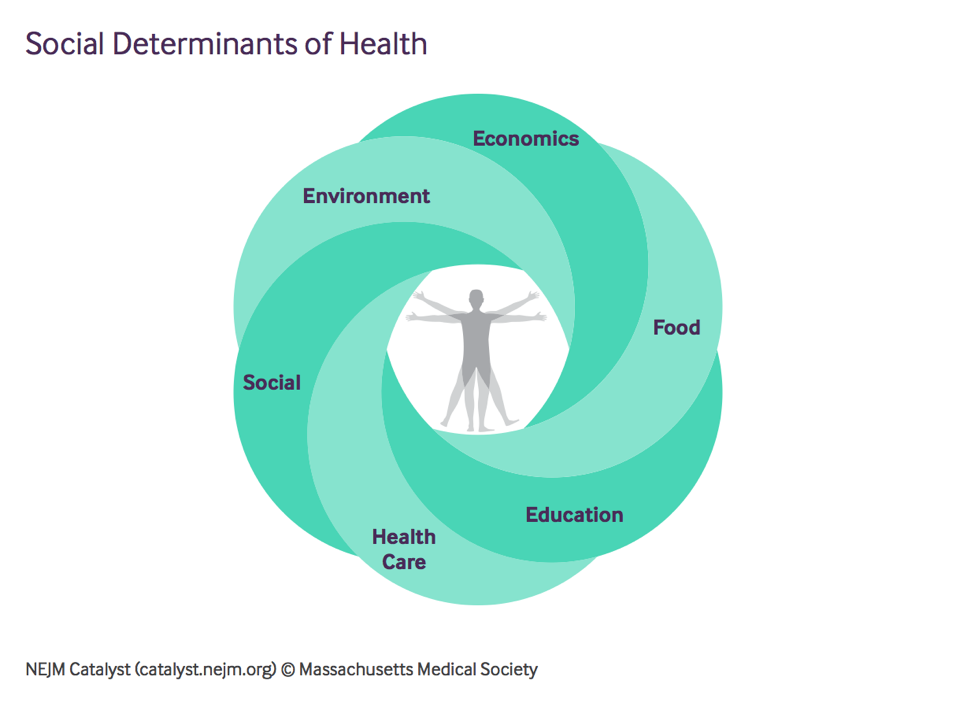
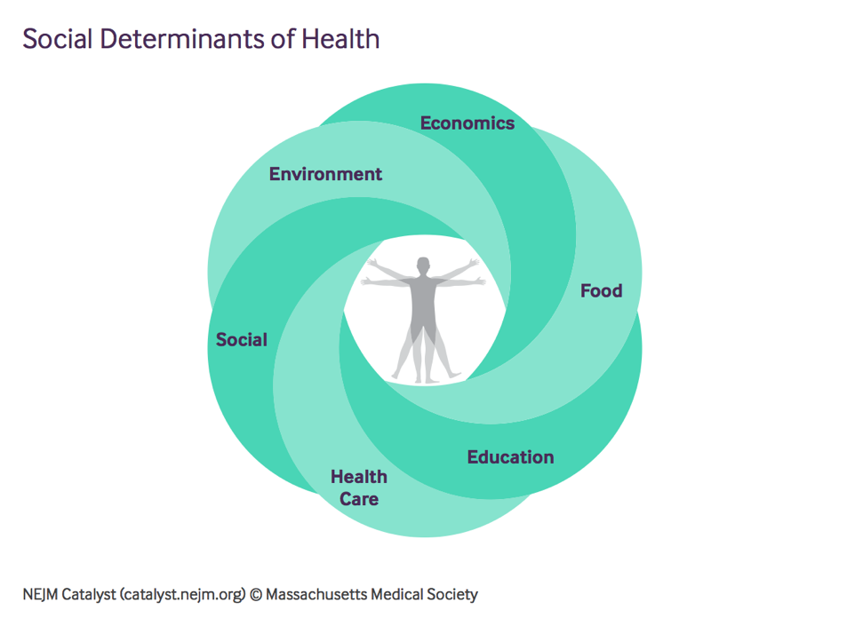

State of Obesity and Social Determinants of Health
Welcome to our Data Science Boot Camp Project!
 

There is growing interest within Health Care Providers to combine wide variety of big data to gain insights, improve accuracy of predictive models, and effectively address increasing health risks of populations they serve.
This project aims to contribute to their efforts.
The prevalence of Obesity has progressively increased globally. The Social Determinants of this pandemic are many.
Social determinants of health are considered structural predictors of overall health of the population. They include conditions in which people are born, live, etc.
Here we provide insights into current state of Obesity and Population in the United States.
We present the information alongside several Social Determinants of Health.
Select combination of data from our interactive site and learn more!
Data provided for the following Social Determinants:
1) Economic Stability: Proverty and Income Level
2) Food: Locations of Fast Food Restaurants
3) Neighborhood and Physical Environment: Locations of Fitness Centers